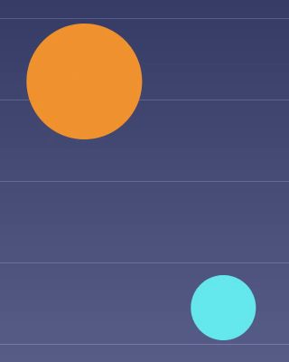
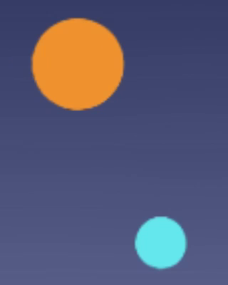
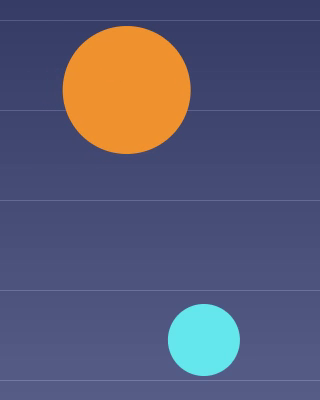

30 fps → 60 fps
30fps の動画を 60fps に。足りないコマを 1 枚ずつ比べる
30fps の動画は、33.3 ミリ秒ごとに絵が切り替わります。60fps で再生するには、すべてのコマの間に、その中間の絵がもう 1 枚要ります。FrameSmoother はその絵を AI のフレーム補間で iPhone の中で計算し、元のコマは作り直さずにその間に並べて、60fps の動画として保存します。動画をアップロードすることはありません。
01Frame by frame
元の動画に無かったコマ
実際の変換から、続けて並んだ 3 コマを切り出しました。元は 1280×720・30fps・2 秒の試験用の動画で、FrameSmoother の処理に 高画質・60fps で通したものです。真ん中のコマは元の動画にはありません。実線は橙の玉の中心、点線は前後のコマでの位置です。



玉の中心（玉の画素の平均位置）の実測：橙は 572.8 → 588.9 → 606.2 で、ちょうど中間は 589.5。水色は 726.8 → 705.3 → 683.4 で、中間は 705.1。この試験は iOS シミュレータの CPU で動かしたもので、iPhone では通常 GPU を使うため、結果がわずかに違うことがあります。
02In numbers
同じ動画の、前と後
| 2 秒の試験用動画 | 元 | 後 |
|---|---|---|
| 1 秒あたりの絵 | 30 | 60 |
| ファイルのコマ数 | 60 | 119 |
| 絵と絵の間隔 | 33.3 ms | 16.7 ms |
| モデルが計算したコマ | – | 59 |
| そのまま使った元のコマ | – | 60 |
120 ではなく 119 なのは、最後の元のコマの後ろに補間の相手が無く、そのコマで終わるためです。
上は元の動画（同じ速さで流すため、各コマを 2 回ずつ表示）、下は同じ動画を FrameSmoother で 60fps にしたものです。60Hz 以上の画面では、下の玉は半分の刻みで動き、ぬるぬると動いて見えます。
03On the iPhone
FrameSmoother で 60fps にする
- ホーム
動画を選択 をタップし、写真から動画を 1 本以上選びます。
- 補間設定 › 出力フレームレート
目標 fps のまま 60fps を選びます。下の行に、たとえば 出力: 60 fps と仕上がりが出ます。
- 補間品質
高画質 は AI のモデルを使います。高速 は AI を使わずに前後のコマを重ねて作るので、早く終わります。
- 右上
キューに追加 をタップします。キュー が開き、進み具合と残り時間の目安が出ます。
- キュー
行が 完了 になったらタップしてプレビューを開きます。境目を動かして前後を見比べたり、1 コマずつ送ったりできます。プレビューを閉じたら、キューの行にある下向きの矢印のボタンで写真に保存、上向きの矢印のボタンで AirDrop やほかのアプリに共有できます。
04More comparisons